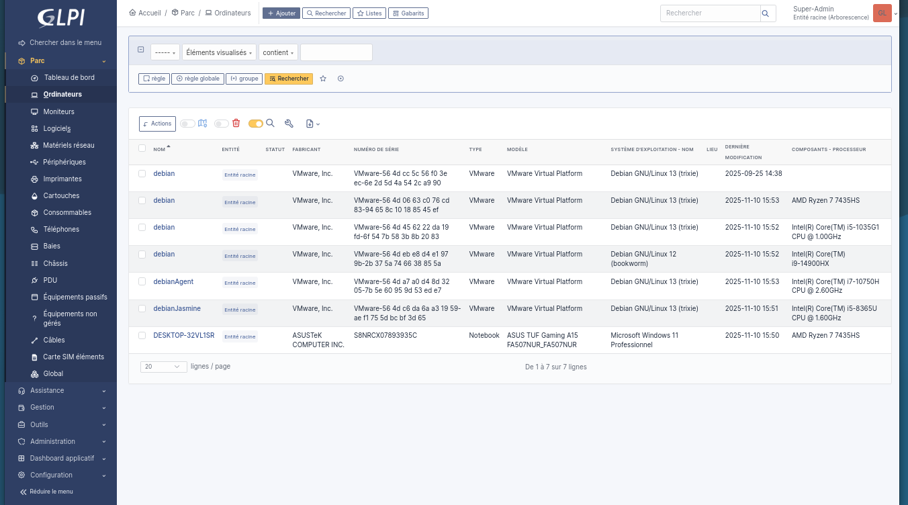
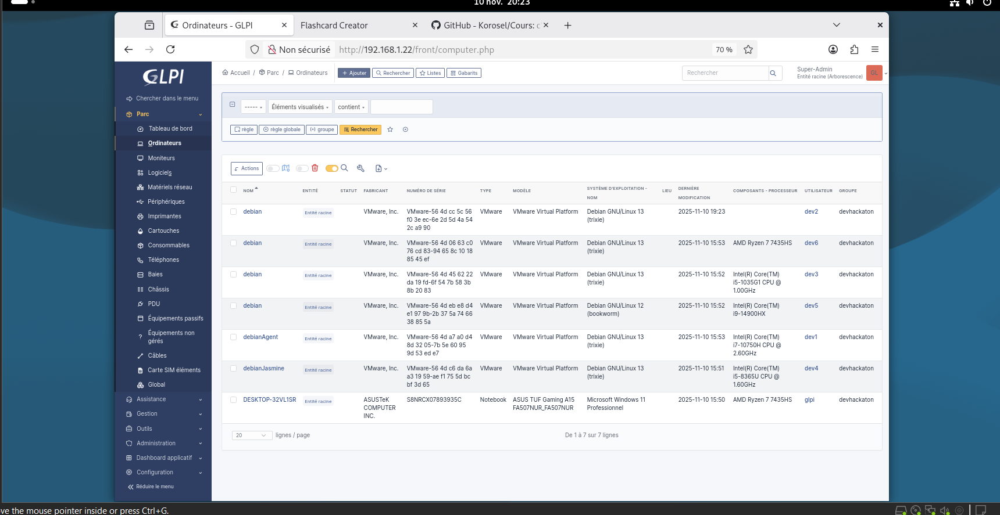
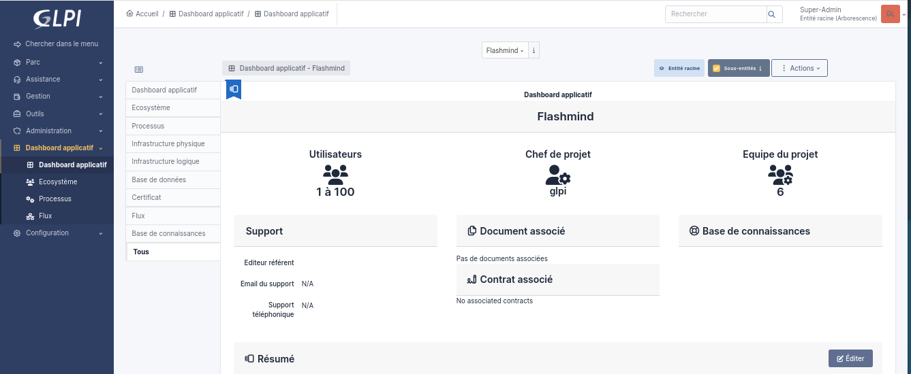
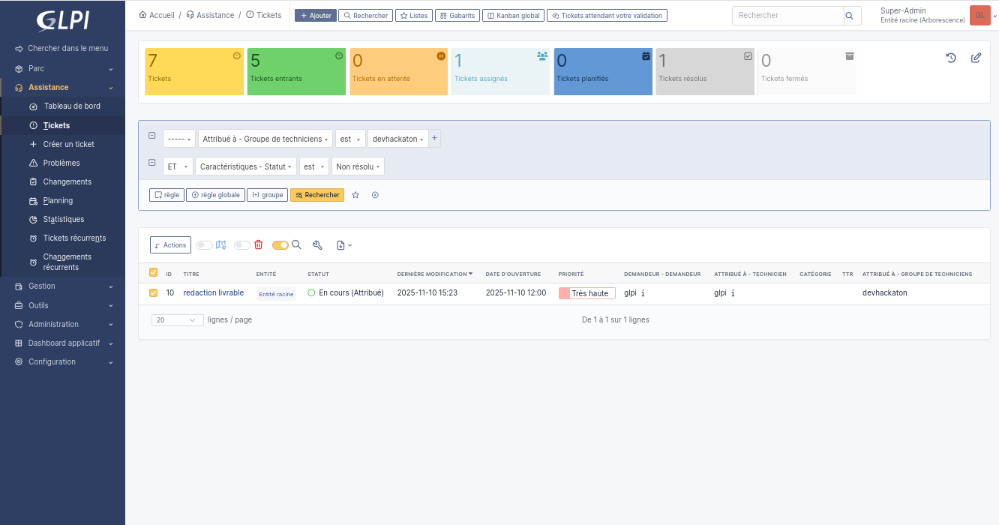
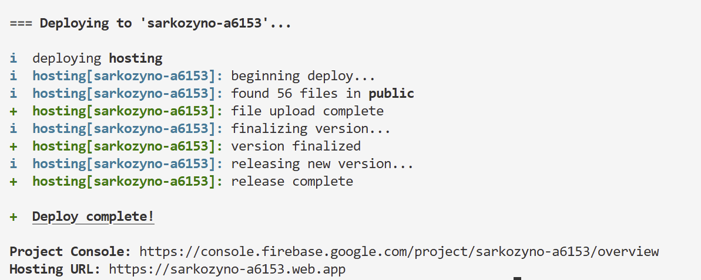
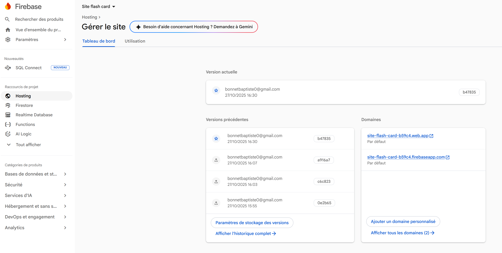

Documentation détaillée illustrant la validation de compétences clés du BTS SIO à travers le déploiement de la solution ITSM GLPI.
Cette compétence est démontrée par l'installation et l'exécution de l'agent GLPI sur les postes clients afin d'automatiser la remontée de l'inventaire matériel et logiciel vers le serveur.
Exécution du .msi via PowerShell en administrateur et forçage de la remontée d'inventaire :
cd "C:\Program Files\GLPI-Agent"
.\glpi-agent.bat --server http://192.168.1.18/marketplace/glpiinventory/ --force --debugVérification du bon fonctionnement du service d'inventaire :
Get-Service glpi-agent
# Résultat attendu : Status: Running | Name: glpi-agentInstallation du script Perl et forçage manuel :
wget https://github.com/glpi-project/glpi-agent/releases/download/1.15/glpi-agent-1.15-linux-installer.pl -O glpi-agent.pl
sudo perl glpi-agent.pl
sudo glpi-agent --server http://192.168.1.18/marketplace/glpiinventory/ --force --debugVisualisation des équipements et logiciels remontés dans l'interface GLPI :


GLPI intègre un module Helpdesk (gestion de tickets) qui permet de centraliser les demandes des utilisateurs. Techniquement, cette compétence s'illustre par la mise en place de la base de données MariaDB, indispensable pour stocker, suivre et orienter ces requêtes.
Création de la structure de base de données dédiée à GLPI avec un encodage adapté et sécurisation via un utilisateur spécifique (abandon du compte root) :
CREATE DATABASE glpi CHARACTER SET utf8mb4 COLLATE utf8mb4_unicode_ci;
CREATE USER 'glpi'@'localhost' IDENTIFIED BY 'MotDePasseFort!';
GRANT ALL PRIVILEGES ON glpi.* TO 'glpi'@'localhost';
FLUSH PRIVILEGES;Aperçu du tableau de bord d'assistance et du suivi des tickets utilisateur :


Il s'agit ici de configurer l'accès au service GLPI sur le réseau, de s'assurer de sa disponibilité via une URL/IP spécifique, et de permettre son accès sécurisé (ex: via le VPN Tailscale).
Création du fichier VirtualHost Apache (/etc/apache2/sites-available/glpi.conf) pour référencer le service sur le port 80 avec redirection des requêtes via l'URL locale :
<VirtualHost *:80>
ServerName glpi.localhost
ServerAlias 192.168.X.X
DocumentRoot /var/www/glpi/public
<Directory /var/www/glpi/public>
Require all granted
RewriteEngine On
RewriteCond %{HTTP:Authorization} ^(.+)$
RewriteRule .* - [E=HTTP_AUTHORIZATION:%{HTTP:Authorization}]
RewriteCond %{REQUEST_FILENAME} !-f
RewriteRule ^(.*)$ index.php [QSA,L]
</Directory>
</VirtualHost>Activation du routage et connexion au réseau privé Tailscale :
sudo a2enmod rewrite
sudo a2ensite glpi.conf
sudo tailscale upCette compétence se prouve par la gestion des prérequis techniques avant le déploiement afin d'éviter les erreurs bloquantes, et par la vérification des services étape par étape.
Installation planifiée de la pile logicielle complète (Apache, MariaDB, PHP) et anticipation des dépendances requises par l'installateur web de GLPI :
sudo apt update && sudo apt upgrade -y
sudo apt install -y apache2 mariadb-server unzip wget curl
sudo apt install -y php php-cli php-common php-mysql php-mbstring php-curl php-xml php-gd php-intl php-zip php-bz2Vérification des modules chargés pour garantir que l'installation ne bloquera pas (notamment l'extension XML) :
php -m | grep -E 'xml|dom|simplexml'
sudo apache2ctl -S # Vérification de la configuration Apache avant relanceContexte de l'intervention
Afin de rendre notre application web accessible aux utilisateurs finaux, j'ai procédé à son déploiement sur l'infrastructure cloud Firebase Hosting de Google. Ce service permet un hébergement rapide, sécurisé (certificat SSL automatique) et performant pour les applications web statiques ou dynamiques.
Pour interagir avec les serveurs Firebase depuis mon terminal, il a d'abord fallu installer l'interface en ligne de commande (CLI) de Firebase via le gestionnaire de paquets de Node.js (npm).
npm install -g firebase-toolsEnsuite, j'ai dû lier mon environnement local à mon compte Google/Firebase pour autoriser les futurs déploiements :
firebase loginNote : Cette commande ouvre une page web demandant l'autorisation d'accès au compte Google. Une fois validée, le terminal confirme que l'authentification a réussi.
Dans le répertoire racine de mon projet web, j'ai initialisé la configuration Firebase pour lier mon code local au projet créé sur la console web Firebase.
firebase initLors de cette étape interactive, j'ai sélectionné et configuré les options suivantes :
Cette étape a généré deux fichiers de configuration essentiels à la racine de mon projet : .firebaserc (qui cible le projet) et firebase.json (qui contient les règles d'hébergement).
Une fois le projet compilé et prêt, j'ai lancé la commande finale pour envoyer les fichiers vers les serveurs de Firebase.
firebase deploy(Résultat de la console indiquant le téléchargement des fichiers, la création de la version "Release" et fournissant l'URL finale d'hébergement)

À l'issue du déploiement, le terminal renvoie l'URL de production (ex: https://mon-projet.web.app). J'ai effectué un test d'accès direct via le navigateur pour confirmer que le service était correctement déployé et que le certificat HTTPS était bien actif.

Preuves techniques pour la validation des compétences du projet SarKard.
Contexte : Système de connexion avec sessions PHP et contrôle d'accès aux pages.
Lors de la connexion, le système vérifie le mot de passe haché avec password_verify. Si l'authentification réussit, les variables de session sont créées pour maintenir l'habilitation de l'utilisateur.
if ($user && password_verify($password, $user['password'])) {
// Initialisation des variables de session
$_SESSION['user_id'] = $user['id'];
$_SESSION['username'] = $user['username'];
header("Location: ../index.php");
exit;
} else {
$error = "Email ou mot de passe incorrect.";
}Sur les pages nécessitant une habilitation spécifique (comme la mise en vente d'une carte), on vérifie la présence de la session avant d'afficher le contenu.
// --- Verif connection user ---
if (!isset($_SESSION['user_id'])) {
// Redirection vers la page de connexion si l'utilisateur n'est pas habilité
header("Location: auth/login.php");
exit;
}Contexte : Validation des transactions d'achat/vente pour garantir la cohérence des données financières et de l'inventaire.
Avant d'effectuer une transaction, le système s'assure que l'acheteur possède les fonds nécessaires, puis effectue les mises à jour en base de données pour garantir la continuité et la cohérence (débit, crédit, et transfert de propriété).
// Vérifier le solde de l'acheteur
$stmt = $pdo->prepare("SELECT credits FROM users WHERE id = :id");
$stmt->execute(['id' => $_SESSION['user_id']]);
$acheteur = $stmt->fetch(PDO::FETCH_ASSOC);
if ($acheteur['credits'] < $carte_en_vente['sale_price']) {
$error = "Vous n'avez pas assez de crédits.";
} else {
// Retirer les crédits à l'acheteur
$stmt = $pdo->prepare("UPDATE users SET credits = credits - :prix WHERE id = :id");
$stmt->execute(['prix' => $carte_en_vente['sale_price'], 'id' => $_SESSION['user_id']]);
// Ajouter les crédits au vendeur
$stmt = $pdo->prepare("UPDATE users SET credits = credits + :prix WHERE id = :id");
$stmt->execute(['prix' => $carte_en_vente['sale_price'], 'id' => $carte_en_vente['seller_id']]);
// Transférer la carte à l'acheteur et retirer de la vente
$stmt = $pdo->prepare("UPDATE user_cards SET user_id = :buyer_id, is_for_sale = 0, sale_price = NULL WHERE id = :id");
$stmt->execute(['buyer_id' => $_SESSION['user_id'], 'id' => $card_inventory_id]);
$achat_ok = "Carte achetée avec succès !";
}Contexte : Sécurisation des données (mots de passe) et prévention contre les injections SQL (requêtes préparées).
Pour éviter toute injection SQL lors de l'inscription ou de la manipulation des données, l'interface PDO est utilisée avec la méthode prepare() et execute().
// Insertion sécurisée via requête préparée
$stmt = $pdo->prepare("INSERT INTO users (username, email, password, credits) VALUES (:username, :email, :password, :credits)");
$stmt->execute([
'username' => $username,
'email' => $email,
'password' => $hashed_password,
'credits' => 100
]);Respect des règles de sécurité des données personnelles en ne stockant jamais de mots de passe en clair.
// Sécuriser le mot de passe avec password_hash (crée un hash impossible à inverser)
$hashed_password = password_hash($password, PASSWORD_DEFAULT);Contexte : Gestion des demandes d'achat sur le marché et suivi de l'état des ressources (cartes).
Le système rassemble (collecte) les demandes de vente actives (is_for_sale = 1) en croisant les informations des utilisateurs et du catalogue de cartes.
// --- Récupération des cartes en vente ---
$query = "SELECT user_cards.id AS inventaire_id, user_cards.user_id AS seller_id,
cards.name, cards.image_url, cards.rarity,
user_cards.sale_price, users.username
FROM user_cards
INNER JOIN cards ON user_cards.card_id = cards.id
INNER JOIN users ON user_cards.user_id = users.id
WHERE user_cards.is_for_sale = 1";
$stmt = $pdo->query($query);
$cards_for_sale = $stmt->fetchAll(PDO::FETCH_ASSOC);Contexte : Tests fonctionnels (anti-fraude) et vérification stricte de la cohérence de la base de données.
Le système vérifie que l'état de la ressource correspond aux attentes (carte toujours en vente) et que l'action est logique (on n'achète pas sa propre carte).
// Vérification des états anormaux
if (!$carte_en_vente) {
$error = "Cette carte n'est plus disponible.";
} elseif ($carte_en_vente['seller_id'] == $_SESSION['user_id']) {
// Empêcher l'auto-achat pour éviter la fraude et les écarts de cohérence
$error = "Vous ne pouvez pas acheter votre propre carte.";
}Avant de permettre la mise en vente, le système vérifie que la ressource appartient bien au demandeur.
// --- Verif appartenance de la carte ---
$stmt = $pdo->prepare("SELECT user_cards.id AS inventaire_id, cards.name, cards.image_url, cards.rarity
FROM user_cards
INNER JOIN cards ON user_cards.card_id = cards.id
WHERE user_cards.id = :inventaire_id AND user_cards.user_id = :user_id");
$stmt->execute([
'inventaire_id' => $inventaire_id,
'user_id' => $_SESSION['user_id']
]);
$carte = $stmt->fetch(PDO::FETCH_ASSOC);
// blocage si tentative de manipulation d'URL (fraude)
if (!$carte) {
echo "<p style='text-align: center; margin-top: 50px; color: red;'>Cette carte n'existe pas ou ne vous appartient pas.</p>";
exit;
}